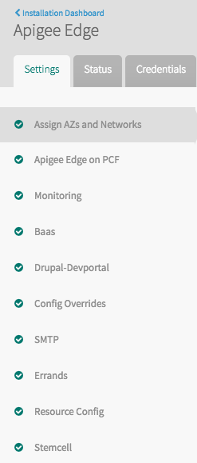
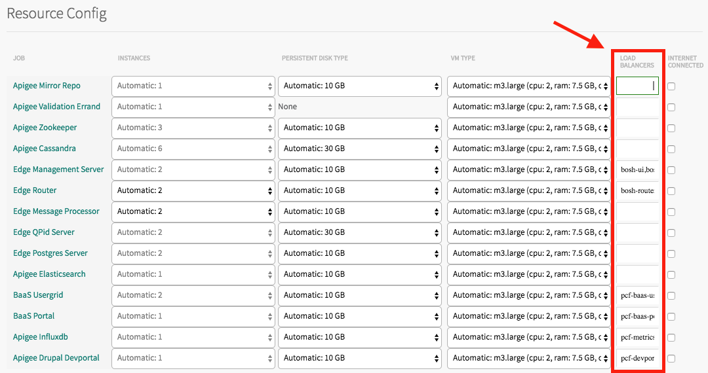

Installing Edge using Ops Manager
Edge for Private Cloud v. 4.16.09
This section describes how to install Edge using the Ops Manager. During the actual installation, the following events occur:
- Ops Manager creates a VM for the Apigee Mirror Repo to host the Apigee yum repo, and makes sure that subsequent VMs have access to this repo.
- Ops Manager then creates VMs and installs the Edge components that do not depend on other components, such as Zookeeper. Each Edge component is installed on its own VM.
- Ops Manager then creates the next VM and installs the Edge components that do not depend on any other component except the components that have already been installed.
- The “apigee” user is created on each VM.
- The apigee-service utility is installed on each VM in case you have to log in to the VM to troubleshoot issues.
After the installation completes, use the Edge management API to provision an organization, and log in to the Edge UI to start creating API proxies.
Installing optional Edge components
You can optionally choose to install additional Edge components, including:
- Apigee BaaS
- Edge Monitoring Dashboard
- Developer Services portal
If you choose to install these optional components you might have to perform additional onboarding or configuration steps.
Apigee BaaS and Developer Services portal both require an SMTP server. If installed, they use the same SMTP server as configured for Edge.
Prerequisites
Before you can install Edge, you must first meet the following prerequisites.
Edge License
Each installation of Edge requires a unique license file that you obtain from Apigee. If license file is valid, the management server validates the expiry and allowed Message Processor (MP) count.
Ops Manager 1.8
Ensure that you are using Ops Manager version 1.8 from Pivotal Software.
Define VMs that meet the Edge system requirements
Ensure that you have defined VMs that meet the memory, CPU, and disk requirements of Edge components as defined in http://docs.apigee.com/node/19881.
Configure load balancers
With Ops Manager, you must predefine load balancers to control access to the servers running Edge. The load balancer defines the domain name and port of the Edge access point, optionally enables TLS, and forwards requests to the appropriate port on an Edge component.
The specific load balancer you use is defined by your IAAS. For example, configure an ELB for AWS.
When configuring an Edge installation in the Ops Manager, you specify the predefined load balancers used by Edge components. Only a subset of Edge components are externally accessible and therefore require load balancers to control access. The following tables lists the Edge components that require a load balancer, and the requirements on the load balancer for that component:
|
Component
|
Load Balancer Requirements
|
TLS
|
|
Management Server
|
You install two Management Servers when installing Edge. The Management Servers require two load balancers:
- Defines the publicly accessible domain name of the Edge UI. For example, https://edgeui.example.com.
Routes requests to the Edge UI to port 9000 on the Management Servers.
Because there are two instances of the UI running, one on each Management Server, you must enable sticky sessions on the load balancer.
- Defines the publicly accessible domain name of the Edge management API. For example, https://edgemgmt.example.com.
Routes requests to the Edge API to port 8080 on the Management Servers.
|
Recommended for both
|
|
Router
|
You install a minimum of two Routers when installing Edge. The Routers require two load balancers:
- Defines the publicly accessible domain name of API proxies deployed on Edge. For example, https://api.example.com.
API proxy request are in the form domain:port which you then route to port on the Router servers. Use this domain name when configuring a virtual host for an organization.
- Defines the publicly accessible domain name of the test APIs used to validate the installation. For example, https://test.example.com.
Requests to this domain are forwarded to port 59001 on the Router servers.
|
Recommended
|
|
Influxdb (Monitor)
|
You install a single Influxdb server. The load balancer defines the publicly accessible domain name of the Edge Monitoring Dashboard. For example, https://monitor.example.com.
Route Monitoring requests to port 3000 on the Influxdb server.
|
Recommended
|
|
BaaS Portal
|
You install a single BaaS Portal server. The load balancer defines the publicly accessible domain name of the BaaS Portal. For example, https://baas_portal.example.com.
The load balancer then routes BaaS Portal requests to port 9000 on the BaaS Portal server.
|
Recommended
|
|
BaaS Stack
|
You install two BaaS Stack servers. The load balancer defines the publicly accessible domain name of the BaaS API hosted on the BaaS Stack servers. For example, https://baas_api.example.com.
The load balancer then routes BaaS API requests to port 8080 on the BaaS Stack servers.
|
Recommended
|
|
Developer Services portal
|
You install a single Developer Services portal server. The load balancer defines the publicly accessible domain name of the portal. For example, https://dev_portal.example.com.
The load balancer then routes Developer Services portal requests to port 8079 on the portal server.
|
Recommended
|
Install Edge
Use the following procedure to install Edge:
- Create the required load balancers as defined above in Define VMs that meet the Edge system requirements.
- Import the Edge tile into the Ops Manager.
- Select the Edge tile. The Settings tab is selected.

- Under Assign AZs and Networks, select the network for the Edge install.
Note: After this step and the following steps, select the Save button to save your changes.
- Under Apigee Edge on PCF, enter:
- System admin's email address and password
- MP Pod name: default is "gateway"
- Region: default is "dc-1".
- Edge license.
- Optionally select Monitoring to enable the installation of the Edge monitoring tool (default is disabled).
- Optionally select BaaS to enable the installation of BaaS (default is disabled).
If you choose to install Apigee BaaS, it uses the same sys admin credentials, region name, and SMTP server as configured for Edge. It also sets the BaaS sys admin's username to sysadmin.
- Optionally select Drupal-Devportal to enable the installation of the Developer Services portal (default is disabled).
If you choose to install the Developer Services portal, it uses the same sys admin credentials and SMTP server as configured for Edge.
- Select Config Overrides to enter any configuration overrides to Edge components.
- You must specify the following overrides under Apigee Edge Message Processor Config Override to specify the memory requirements:
bin_setenv_min_mem=512m?
and:
bin_setenv_max_mem=2816m
You can apply additional overrides now during the installation, or apply them later after the installation complete. For more, see How to Configure Edge.
- If you are installing BaaS, you must specify the following override under BaaS Portal Config Overrides to specify the URL defined by the load balancer for the BaaS Stack nodes:
baas.portal.config.overrideUrl=url_for_baaS_stack_nodes
- Edge requires you to configure an SMTP server, as described in the following step. Some SMTP servers require you to set the sender's email address used when generating emails. For example it is required when installing Edge on AWS. To set the sender's email address, set the following property:
- Under Edge Ui Config Overrides set:
conf_apigee_apigee.mgmt.mailfrom="Apigee <sender@example.com>"
conf/application.conf+trustxforwarded=true
The second property specifies to use TLS in the URL sent to the user when resetting their password.
- If you installed the Developer Services portal, under Apigee Drupal Devportal Config Overrides set:
conf_devportal_default_sender_address="sender@example.com"
- If you installed Apigee BaaS, under BaaS Usergrid Config Overrides set:
usergrid-deployment_usergrid.management.mailer="Apigee Baas <sender@example.com>"
usergrid-deployment_usergrid.api.url.base=url_for_baaS_stack_nodes
- Select SMTP to configure the email server used for email messages sent from Edge. For example, when a user requests a new password. SMTP email is disabled by default.
Note: SMTP configuration is required - you must specify an SMTP server when installing Edge.
For the SMTP port, the value can be different based on the selected encryption protocol. For example, for Gmail, the port is 465 when using SSL and 587 for TLS.
If installed, Apigee BaaS and the Developer Services portal also use this SMTP server.
- Select Errands to ensure that the Apigee Validation Errand is enabled. This errand runs a series of tests to validate the installation and enables SmartDocs.
- Select Resource Config to specify the number of Router and Message Processor servers. The default is 2 servers each.
Note: Do not check any of the INTERNET CONNECTED boxes. All externally accessible Edge components use a load balancer to provide internet access.
- In Resource Config, ensure that you select a VM TYPE that matches the system requirements of the component as defined at Hardware Requirements.
- In Resource Config, specify the load balancer names in the LOAD BALANCERS column for the Management Server, Router, and Influxdb components.
- If you are installing Apigee BaaS, specify the load balancer for the BaaS Portal and BaaS Stack (called BaaS usergrid in Ops Manager) servers.
- If you are installing the Apigee Developer Services portal (called Drupal Devportal in Ops Manager) specify the load balancer for the server.

See "Configure load balancers" above for information on the requirements of the load balancers.
- Select Stemcell to see the Apigee stemcell. Edge requires the CentOS stemcell. CentOS stemcells for different platforms can be downloaded from https://bosh.io/stemcells. Select and download the matching stemcell for the given infrastructure.
Note: This release uses the 3262.2 version of the CentOS stemcell. The minor version can be 2 or higher (such as 16, 18, etc.).
For example, for AWS infrastructure, use only the HVM Light CentOS 7 stemcell from: http://bosh.io/stemcells/bosh-aws-xen-hvm-centos-7-go_agent
- Select Installation Dashboard in the upper-left corner to return to the main Ops Manager page.
- Select Apply Changes to start the installation. When the installation completes, you return to the ops Manager.
Test the installation
This section describes how to test the Edge installation.
Log in to the Edge UI
The Edge UI lets you perform most of the tasks necessary to create, configure, and manage API proxies, API products, apps, and users. When you installed Edge, you enabled the Apigee Validation Errand. This errand creates an organization named VALIDATE on edge.
The VALIDATE org is used by the Apigee Validation Errand and to test that you can log in to the Edge UI. Do not use the VALIDATE org to develop your APIs. http://docs.apigee.com/node/23066 describes how to create an organization for development.
After installing Edge, log in to the VALIDATE organization in the Edge UI by using the following procedure:
- Open the following URL in a browser:
https://<edge_ui_domain>
In this URL, <edge_ui_domain> is the domain name of the Edge UI as defined by the load balancer for the Management Server component
- When prompted, enter the system admin's email address and password that you specified in the Ops Manager when you installed Edge.
The Edge UI appears.
Log in to the BaaS Portal
This step is only required if you chose to install Apigee BaaS.
The BaaS Portal is the UI that you use with BaaS to create apps, add and configure users, add and update collections, and perform many other tasks. After installing BaaS, log in to the TEST organization in the BaaS Portal.
The TEST org is used to test that you can log in to the BaaS Portal. Do not use the TEST org to develop your BaaS apps. http://docs.apigee.com/node/23066 describes how to create a BaaS organization for development.
After installing BaaS, log in to the TEST organization in the BaaS Portal by using the following procedure:
- Open the following URL in a browser:
http://<baas_portal_domain>
In this URL, <baas_portal_domain> is the domain name of the BaaS Portal as defined by its load balancer.
- When prompted, enter the BaaS system admin's email address and password. This is the same as the system admin's email address and password that you specified in the Ops Manager when you installed Edge.
The BaaS Portal appears.
Make calls the the Edge API
Test the installation by making calls to the Edge management API.
- Create a virtual host by running the following cURL command. This virtual host lets you use API calls to validate the installation:
curl -X PUT -u <sysAdminEmail>:<passwd> \
https://<ms-api-domain>/v1/o/VALIDATE/e/test/virtualhosts/default \
-d '{ "hostAliases" : [ "VALIDATE.apigee.com", "<router-test-domain>" ], "interfaces" : [ ], "name" : "default", "port" : "59001"}' -H "Content-Type: application/json" -i
In this call <ms-api-domain> is the domain name of the Edge management API as defined by the load balancer for the Management Servers. <router-test-domain> is the domain name defined by the test load balancer on the Router that forwards requests to port 59001 on the Router.
- Run the healthcheck API:
curl https://<ms-api-domain>/v1/apigee/healthCheck
Where <ms-api-domain> is the domain name of the Edge management API as defined by the load balancer for the Management Servers.
This API returns "OK" if it executes successfully.
- View the central pod. The central pod contains the Management Server, Zookeeper, LDAP, UI, and Qpid components:|
curl -v -u <sysAdminEmail>:<passwd> https://<ms-api-domain>/v1/servers?pod=central
The call returns information about the Edge components in the pod, including the UUID of each component. You often need the component's UUID to configure it.
See About pods for more information.